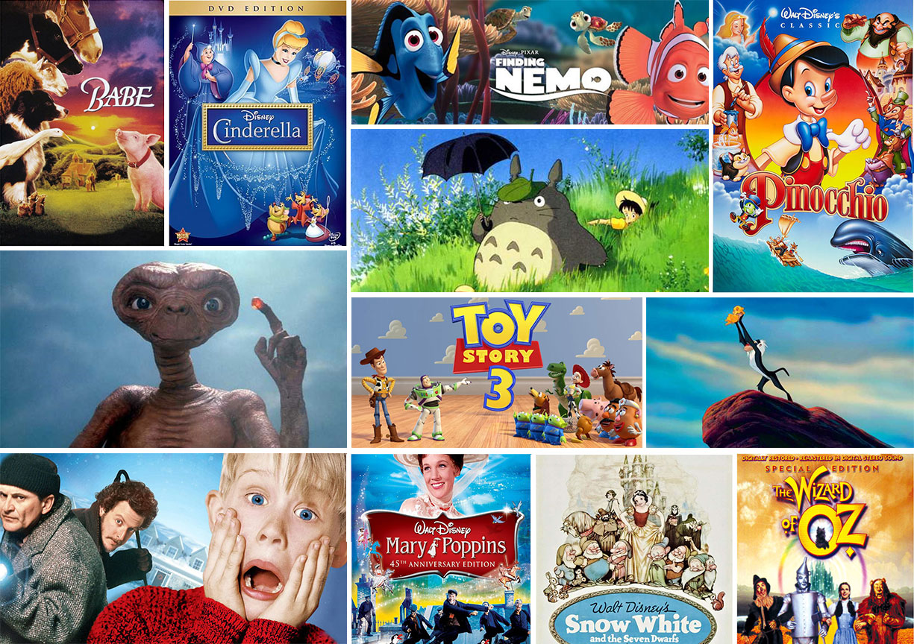

Best Children Movies of all time

Top 3 movies I like
1. Home Alone
" Home alone is a movie that stars Macauly Culkin,Catherine O' Hara, Daniel Stern etc.
It is a fun-loving movie. It is based on a christmas story where a boy named Kevin is accidentaly
left back at home by his family."
2. Toy Story
"Toy Story is a series of animated movies. The first Toy story movie was in 1990 and the latest one
was released in 2020. It tells the story about a boy named Andy, who has Stuffed toys that magically
are alive. The Main Charectors are Woody, Buzz Lightyear, Jessie, Mr. and Mrs Potato etc."
3. Finding Nemo
"Finding Nemo is a story of a fish that is seperated from its Father and is trying to go back
to him, Nemo is helped by a group of other fishes with Dory being his best friend.
Nemo is able to find his Dad. This film was first released in 2003 and then it was available to
see in 3D in 2015."